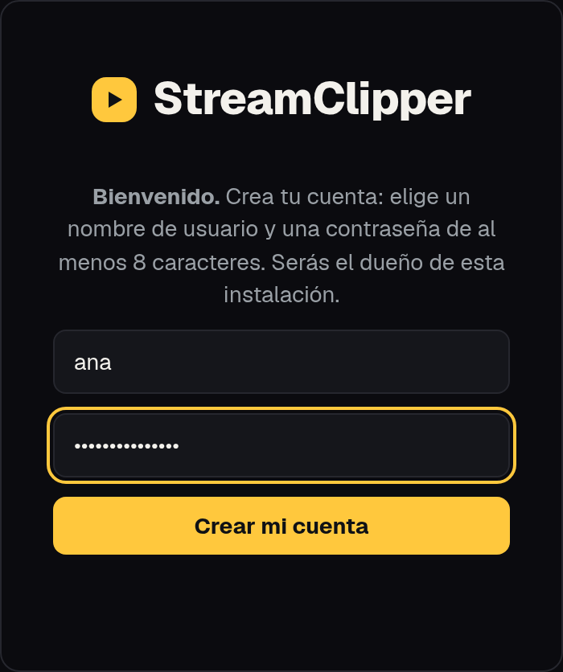
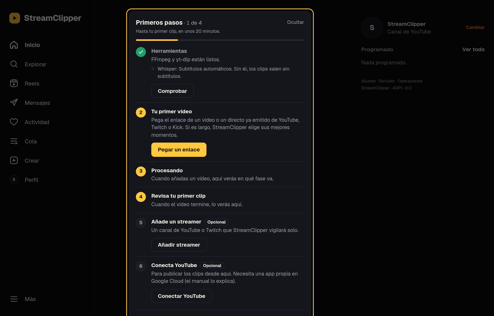
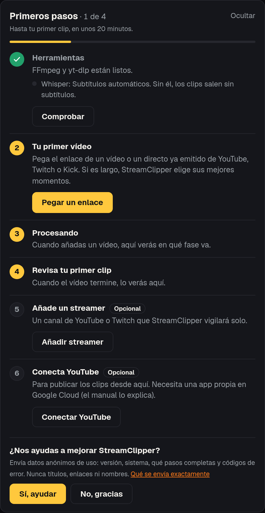
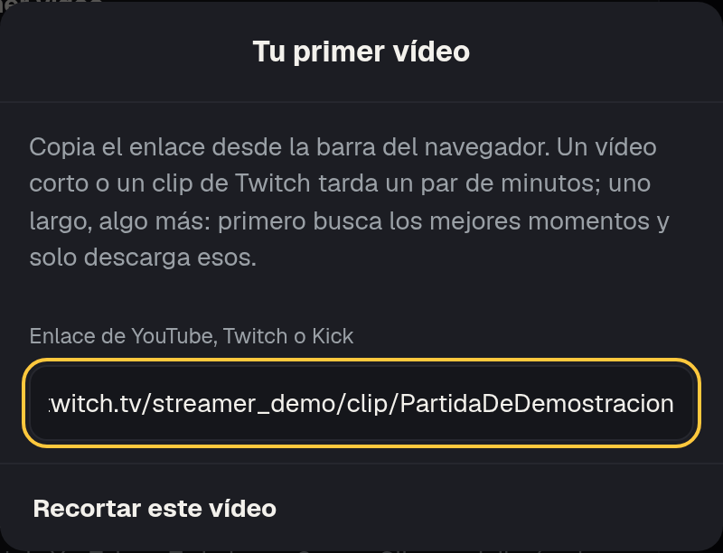
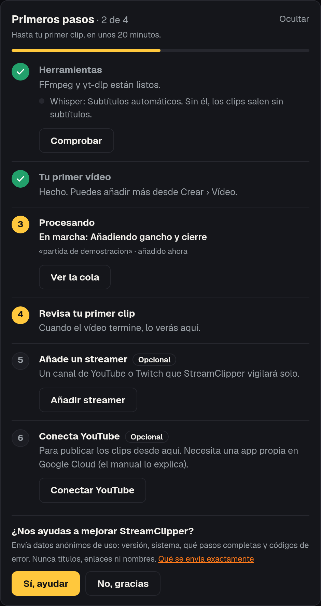
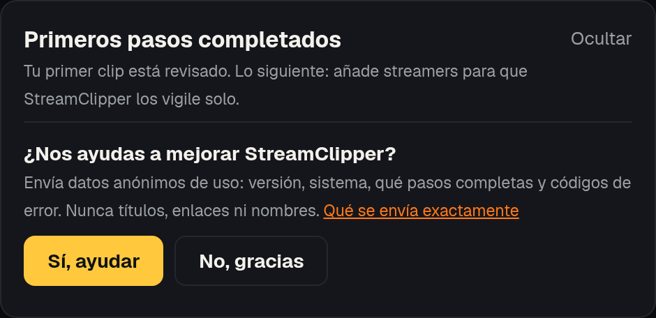
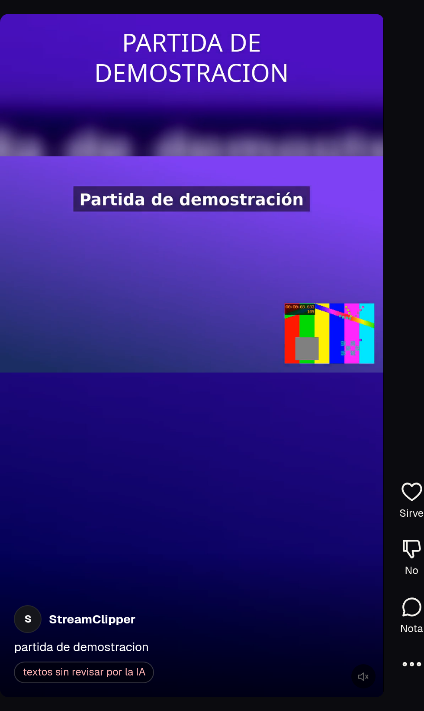

Para quien empieza de cero
Tu primer clip, paso a paso
Instala StreamClipper en tu ordenador, pégale el enlace de un vídeo y revisa tu primer clip vertical. Sin saber programar.
StreamClipper es un programa que instalas en tu ordenador. Le das el enlace de un vídeo o de un directo y él busca los mejores momentos, los recorta en vertical, les pone texto y te los enseña para que digas si sirven.
No es una web de otra empresa: tus vídeos, tus clips y tus cuentas se quedan contigo. Lo abres en el navegador, como una página más.
Cada clip pasa por ti: «Sirve» o «No sirve». Con cada respuesta, la app aprende qué te gusta.
Cuando le añades streamers, mira sus vídeos nuevos y prepara clips mientras tú haces otra cosa. Publicar en YouTube o TikTok es opcional.
En unos 20 minutos: tener StreamClipper funcionando, crear tu cuenta y revisar tu primer clip. Cada paso dice qué escribir y qué deberías ver.
Un ordenador con Windows 10/11, macOS o Linux, conexión a internet y unos 5 GB libres. StreamClipper usa tres programas gratuitos:
Hace funcionar StreamClipper.
Corta, encuadra y monta los clips.
Descarga los vídeos de YouTube, Twitch y Kick.
Las órdenes se escriben en la terminal: una ventana donde pegas texto y pulsas Intro. Cópialas tal cual, una por una. Si te pide tu contraseña del ordenador, escríbela (no se ve mientras escribes) y pulsa Intro.
El recorte de StreamClipper funciona en Linux y macOS. En Windows se usa con WSL, que Microsoft incluye gratis y se instala con una sola orden.
Pulsa Inicio, escribe PowerShell, clic derecho › Ejecutar como administrador, y pega:
wsl --install -d Ubuntu
Reinicia el ordenador. Al volver se abre la ventana de Ubuntu: elige un nombre de usuario y una contraseña (apúntala).
A partir de aquí, todo se escribe en esa ventana de Ubuntu (búscala en Inicio). Sigue los pasos de Linux (Ubuntu) de la página siguiente.
Abre Terminal (Aplicaciones › Utilidades). Instala Homebrew, el instalador de programas más usado en Mac:
/bin/bash -c "$(curl -fsSL https://raw.githubusercontent.com/Homebrew/install/HEAD/install.sh)"
Cuando termine, copia las dos órdenes que te enseña en «Next steps» y luego:
brew install node ffmpeg yt-dlp
Node.js 22 desde su repositorio oficial, FFmpeg desde Ubuntu y yt-dlp, siempre al día, desde su web:
curl -fsSL https://deb.nodesource.com/setup_22.x | sudo -E bash - sudo apt install -y nodejs ffmpeg git sudo curl -L https://github.com/yt-dlp/yt-dlp/releases/latest/download/yt-dlp -o /usr/local/bin/yt-dlp sudo chmod a+rx /usr/local/bin/yt-dlp
sudo pacman -S nodejs npm ffmpeg yt-dlp git
Escribe cada orden. Si ves un número de versión, está instalada. Si ves «command not found», repite su paso.
node -v
Debe decir v22.13 o más.
ffmpeg -version
Primera línea: «ffmpeg version …».
yt-dlp --version
Una fecha, como 2026.11.20.
En la misma terminal. Elige una de las dos formas de descargarlo:
git clone https://github.com/2mingho/streamclipper.git cd streamclipper/servidor
O sin git: descarga el ZIP desde github.com/2mingho/streamclipper (botón verde «Code» › «Download ZIP»), descomprímelo y entra en su carpeta servidor con cd.
npm install
Tarda un minuto. Al final verás «added … packages». Los avisos amarillos («warn») son normales.
npm start
Deberías ver:
StreamClipper en http://127.0.0.1:8790 · modelos: http://127.0.0.1:1234 Papel del proceso: todo
Si falta FFmpeg o yt-dlp, aquí aparece un «Aviso» que dice cuál. Deja esta ventana abierta: si la cierras, StreamClipper se apaga.
Chrome, Edge, Firefox o Safari, en la dirección http://127.0.0.1:8790. Para volver otro día: abre la terminal, cd streamclipper/servidor y npm start.
La primera vez, StreamClipper te pide un usuario y una contraseña. Esa primera cuenta es la del dueño: puede cambiarlo todo y, más adelante, invitar a su equipo.
La contraseña necesita al menos 8 caracteres. Apúntala: no hay correo para recuperarla.
Entras directamente en Inicio.
Un recorrido guiado señala cada parte de la app. Puedes saltarlo y volver a verlo en Ajustes › Mi cuenta.


En Inicio verás una lista con cuatro pasos y dos opcionales. Cada uno se marca solo cuando está hecho y tiene un botón que te lleva justo donde hay que ir.

Comprueba FFmpeg y yt-dlp. Si falta alguna, «Cómo instalarlo» abre este manual en su página. Tras instalarla, pulsa «Comprobar».
Pulsa «Pegar un enlace». En otra pestaña, abre el vídeo en YouTube, Twitch o Kick y copia la dirección de arriba del navegador. Pégala y pulsa «Recortar este vídeo».

Sirve un vídeo largo o un directo ya terminado: StreamClipper elige sus mejores momentos (lo más reproducido de YouTube o los picos de voz) y solo descarga esos. Un vídeo corto tarda un par de minutos; uno largo, algo más.
La lista enseña la fase real del vídeo: buscando los mejores momentos, descargando, montando cada clip. Se actualiza sola cada pocos segundos; no hace falta recargar. Si algo falla, dice qué pasó y te da «Reintentar».


Cuando termina, pulsa «Abrir mi primer clip». Míralo y elige «Sirve» (corazón) o «No sirve». Con eso, la lista queda completa.

Al final de la lista te preguntamos si quieres enviar datos anónimos de uso. Está apagado si no dices que sí, y nunca incluye títulos, enlaces ni nombres (TELEMETRY.md).
Paso 5, «Añadir streamer»: StreamClipper mirará sus vídeos nuevos y te preparará clips solo.
StreamClipper publica en tu nombre, así que YouTube y TikTok te piden registrar una «app» propia y gratuita. Es la parte más pesada de todo el proceso, pero solo se hace una vez.
En Google Cloud Console crea un proyecto, activa «YouTube Data API v3» y configura la pantalla de permisos como «Externo».
Crea un cliente OAuth de tipo «App de escritorio» y descarga su archivo JSON.
En StreamClipper: Ajustes › Publicación › «Conectar un canal de YouTube». La app te guía, te deja pegar ese JSON y abre la autorización de Google.
Mientras tu app esté «en prueba», añade tu correo como usuario de prueba. Google pide renovar ese permiso cada 7 días.
Crea una app en el portal de desarrolladores de TikTok con «Content Posting API».
Guarda su clave, su secreto y su dirección de retorno (https) en ~/.config/streamclipper-tiktok/app.json y pulsa «Conectar TikTok» en Ajustes › Publicación.
Hasta que TikTok revise tu app, solo puedes publicar en privado («Solo yo»).
StreamClipper solo se abre en tu ordenador para que nadie más pueda entrar. Para usarlo también desde el móvil, la forma más segura y sencilla es Tailscale: una red privada entre tus dispositivos, gratis para uso personal.
En el ordenador (tailscale.com/download) y en el móvil (App Store o Google Play). Entra con la misma cuenta en ambos.
En Windows con WSL, instálalo también dentro de Ubuntu:
curl -fsSL https://tailscale.com/install.sh | sh sudo tailscale up
Para StreamClipper (Ctrl + C en su ventana) y arráncalo así:
HOST=0.0.0.0 npm start
En la app de Tailscale verás la dirección de tu ordenador (empieza por 100.). Abre en el navegador del móvil http://esa-dirección:8790 y entra con tu usuario.
«command not found» al escribir node, ffmpeg o yt-dlp: esa herramienta no está instalada o la terminal se abrió antes de instalarla. Cierra la terminal, ábrela de nuevo y repite su paso de la página 4.
«node: v18…» o npm install falla con errores de versión: tu Node.js es antiguo. Instala la versión 22 con los pasos de la página 4 y comprueba con node -v.
«EADDRINUSE» al hacer npm start: StreamClipper ya está abierto en otra ventana, u otro programa usa el puerto 8790. Ciérralo, o usa otro puerto: PORT=8791 npm start y abre http://127.0.0.1:8791.
El navegador dice «no se puede acceder al sitio»: la ventana de la terminal con StreamClipper está cerrada. Vuelve a arrancarlo (página 5) y recarga.
Un vídeo largo pasa mucho rato «En marcha»: es normal en vídeos de horas: primero lee lo más reproducido o escucha todo el audio para encontrar los momentos, y después descarga solo esos. Mira la fase en «Primeros pasos» o en Cola.
El vídeo falla al descargar («HTTP Error 403», «Sign in to confirm»): yt-dlp necesita actualizarse, porque las webs cambian a menudo. Repite su instalación (en macOS, brew upgrade yt-dlp) y pulsa «Reintentar».
Con StreamClipper parado, en la carpeta servidor: node herramientas/clave-dueno.mjs tu-usuario te deja escribir una nueva.